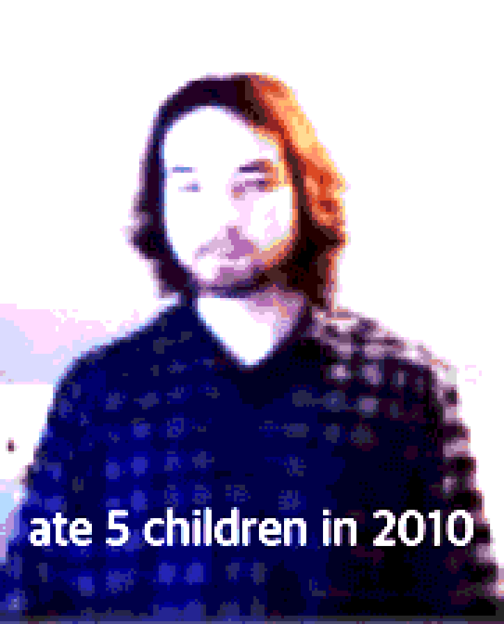

about coby
nuBlog is the home of legendary X dot com user, badc0vers's musings and other things of the sort...
badc0vers goes by a few names...
coby, wayne, conrad, leon, llostinthesauce, and many more...
the hope here is to post some longer form writing. sometimes ranting on the tl is not enough, and there is something about putting some thoughts or words into the air. i am well aware that this is more for me than anyone else, so please do not feel special reading anything. this is also a little project, as i am self hosting this on an old pi. enjoy!
